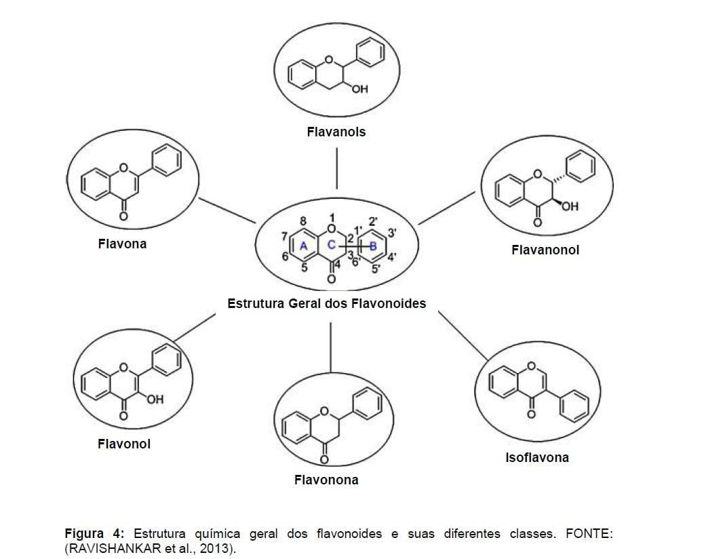

Os Metabólitos secundários são compostos químicos produzidos pelas plantas derivadas do metabolismo primário da glicose.Sendo essenciais para sobrevivência do ser vivo vegetal.Além de agregarem especificidade ao organismo vegetal, possuem defesa contra berbiveria e proteção dos raios UV
Possuem ação antibacteriana, antifúngica,antitumoral,antiplasmódica e inibem a síntesede DNA e RNA.
Possuem ação antialérgica,antiviral,antioxidante e anticarcinogênicas
Ação lipofílica,antifúngica, Antimicrobíana,antiviral e antitumoral.
Além da identificação dos Metabólitos secundários, fora realizado o TAS( teste de artemia salina), e as espécies: Galianthe thalictoides e Bonafousia siphilitica apresentaram alta atividade biológica,quando fora associado o teste a fim de determinar as atividades biológicas da planta e seus respectivos Metabólitos secundários.